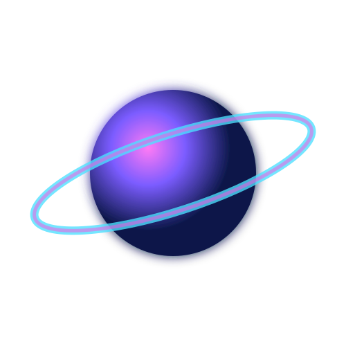

Creative Writing Portfolio
Short stories, poems, peer editing, and full-book editing experience.
Writing • EditingCreative Writer • Musician • Designer • Tech Enthusiast
A creative, curious student blending storytelling, music, design, and technology into glowing digital experiences.

I’m looking for opportunities in creative fields where I can combine marketing, technology, writing, design, and music. I enjoy collaborative projects, editing, visual storytelling, and helping ideas become polished work.
Violin instructor for beginner students. Developed leadership, communication, and teaching skills while helping students build confidence through music.
Explore Experience →Short stories, poems, peer editing, and full-book editing experience.
Writing • EditingFlyers, slide decks, and promotional materials with strong visual presentation.
Graphic Design • LayoutTaught beginner students violin in a group setting while helping them build foundational music skills, confidence, patience, and adaptability.
Assisted with technical troubleshooting, system maintenance, minor user issues, and clear technical communication.
Performed in ensemble settings with Bay Philharmonic Youth Orchestra, Columbus Indiana Philharmonic Youth Orchestra, and Symphonic Band.
Wrote and edited short stories and poems, reviewed peer work, and developed strong proofreading and grammar skills.
Edited news report footage, designed engaging transitions, and created intros and outros for episodes.
Creative writing, proofreading, grammar, poems, short stories, and book editing.
Flyers, slide decks, promotional materials, visual layouts, and digital content.
Violin instruction, ensemble performance, collaboration, discipline, and timing.
Tech support, troubleshooting, system updates, and maintaining digital content.
Group discussion, clear explanations, teamwork, active listening, and agreement building.
Open to creative opportunities, collaborations, design projects, writing work, and technology-related roles.